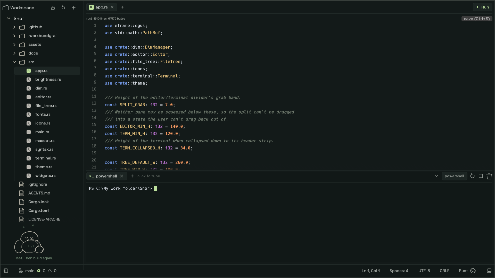
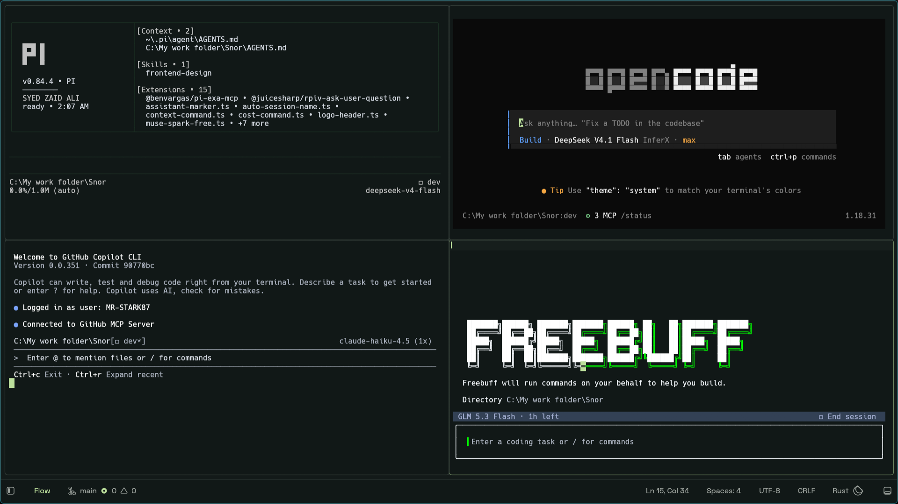
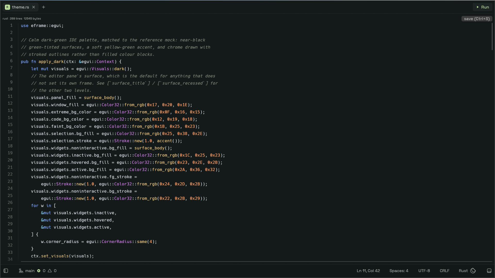
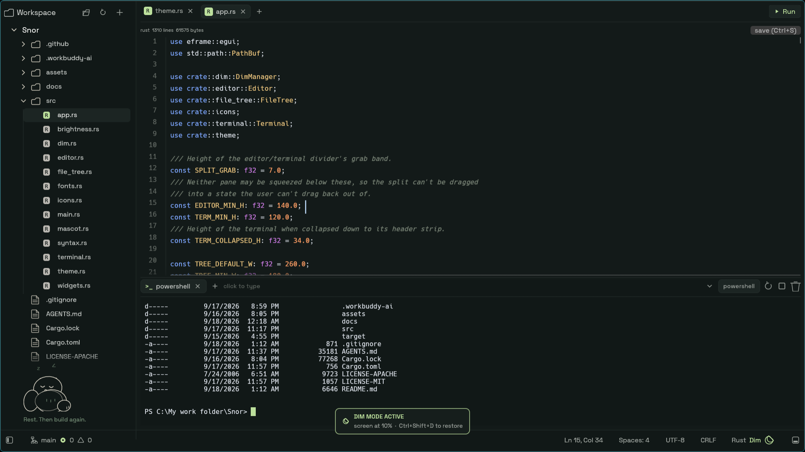
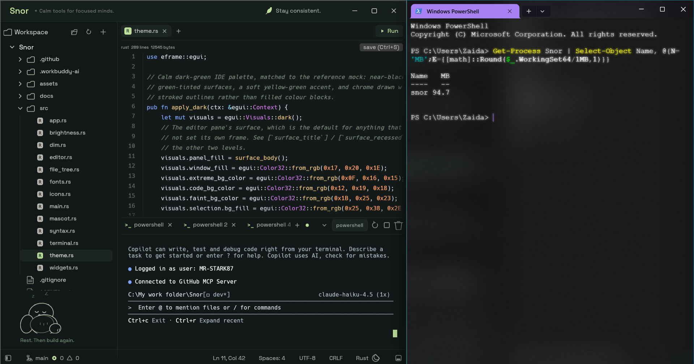

Windows 10 / 11 · 64-bit v0.8 · open-source launch
A lightweight native workspace for agent-driven development
Snor is a minimal IDE in full Rust, built around one shift: your job is moving from typing every line to directing, supervising, and collaborating with coding agents. It stays near 150 MB while doing it — roughly a sixth of the ~980 MB mainstream editors can idle at.
cargo run --release
- ~155 MB
- peak working set
- ~11 MB
- release binary
- 66
- tests, clippy clean
- Zero
- telemetry / accounts

Why Snor?
Agents are powerful. Managing them is the hard part.
A typical agent workflow means jumping between a terminal, an editor, a file explorer, Git tools, and several agent sessions. On larger projects, supervising agents becomes as difficult as writing the code itself.
Snor is an experiment in a calmer setup: one focused window where you see your project, touch your files, and run multiple coding agents side by side — without switching tools every thirty seconds.
Agent-first workspace
Flow Mode: four agents, side by side
The whole window becomes live terminal panes for supervising agents. Split, focus, and let them work.

Multi-session terminal
Real ConPTY powershell.exe -NoLogo -NoProfile with colors and a block cursor behind a tab strip. + opens, click switches, closing the last tab hides the panel, Ctrl+Tab brings it back.
Click any shell and type
Enter, arrows, Tab, Backspace, Ctrl+C all reach the shell. It answers DSR / CPR / DA queries so PSReadLine never blocks.
Explorer follows focus
The file list re-roots at the focused terminal's directory. Any folder offers open terminal here — the fastest way to give each agent its own corner.
- Ctrl+Shift+F Flow Mode
- Ctrl+Shift+H / V Split pane
- Alt+arrows Move pane focus
- Ctrl+Tab Toggle terminal
A calm editor underneath
Touch files without leaving the flow

Highlighting that stays out of the way
Tree-sitter for rust / json / js / toml with a keyword fallback for the rest. 100 KB tree-sitter cap, 500 KB large-file guard.
Find, save, run
In-file find (Ctrl+F, Enter next, Shift+Enter previous), Ctrl+S to save, and a Run button that sends cargo run to the terminal.
File tree
Create / rename / delete, auto-refresh via a filesystem watcher, resizable and collapsible explorer (Ctrl+B).
Dim Mode
Let long agent sessions run with the screen dark
Ctrl+Shift+D lowers the physical backlight (WMI) so overnight runs don't light the room. A moon in the status bar shows while active; machines without brightness control just get a notice.
- Reads current brightness, drops to 10%, restores exactly on exit
- Overlay card confirms state — no stale residue on toggle-off
- Best-effort restore on shutdown, never panics

Memory
Read the number as a peak, not a level
WorkingSet64 counts resident pages and Windows trims them freely for a backgrounded window. Measured on one long-lived debug process: 83.8 MB resident, 155.8 MB peak, 147.3 MB commit. The ~155 MB quoted is the peak; commit is the number that stays put.

| Version | Result |
|---|---|
| V1 debug / release | ~306–313 MB / ~331 MB, 17 MB exe |
| V1.1 (glow + strip + thin LTO) | ~173 MB / ~167 MB, 12.5 MB exe |
| Now | ~155 MB peak, ~147 MB commit, ~11 MB exe |
Get-Process Snor | Select-Object Name, @{N='MB';E={[math]::Round($_.WorkingSet64/1MB,1)}}
Shortcuts
Everything within one chord
| Keys | Action |
|---|---|
| Ctrl+B | Toggle explorer |
| Ctrl+Tab | Toggle terminal |
| Ctrl+Shift+F | Flow Mode (side-by-side agent panes) |
| Ctrl+Shift+H / V | Split pane (enters Flow Mode) |
| Alt+arrows | Move pane focus |
| Ctrl+Shift+D | Dim Mode |
| F11 | Fullscreen |
| Ctrl+S / Ctrl+F | Save / find in file |
What Snor is not
- Not a Zed / VS Code replacement — no extensions, no settings sync, no multi-cursor power tools
- Not cross-platform yet — Windows first, honesty first
- Not a git client, by design — that scope stays out so the memory number stays down
Roadmap
- Stabilize the 1.0 workspace (editor + Flow + terminal)
- Signed release binaries on GitHub Releases
- Docs and screenshots
- Portability groundwork
Direction is set by use — what actually helps supervise agents — not by feature parity with big editors.
Download
Snor for Windows
Windows 10 / 11, 64-bit. One small exe, no installer, no account.
Direct download from GitHub Releases — no account, no installer. If SmartScreen flags it on first run, that is the expected unsigned-preview prompt; signed builds are on the roadmap.
Get running in a minute
- Download the exe and place it anywhere (no install step).
- Launch it, open a folder from the top bar.
- Press Ctrl+Tab for a shell, run your agent of choice inside.
cargo run --release
Tech: eframe 0.36 / egui (glow) + ropey + tree-sitter + portable-pty (ConPTY) + vt100 + notify + rfd. Pinned in Cargo.lock.